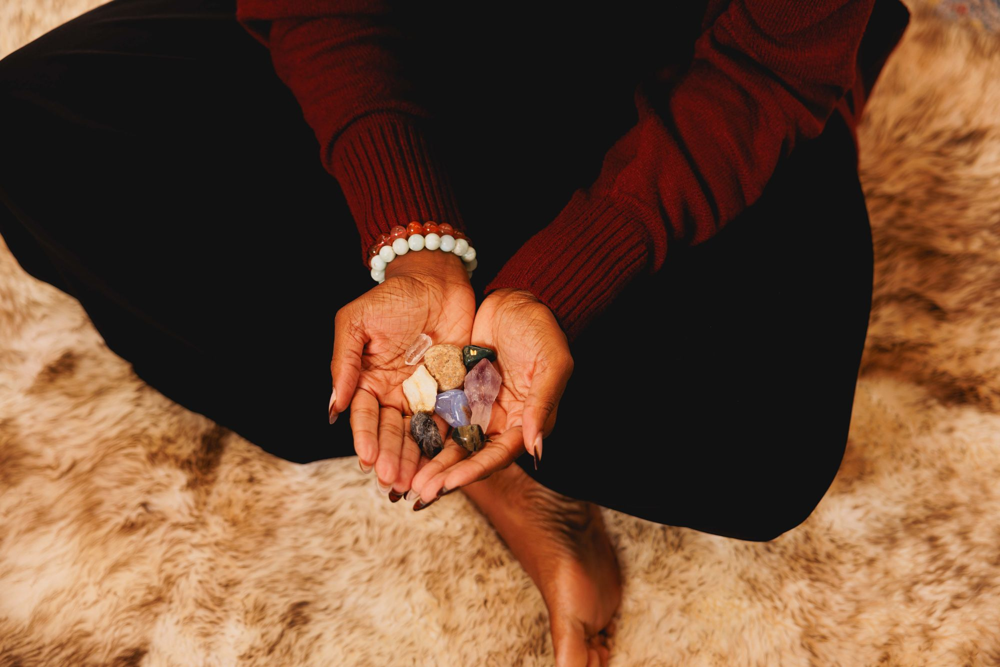

Stories, strategy, and straight talk for anyone done playing small.
By Nnemoma Chukwumerije, LMSW All Posts

Blog Coverblog-cover.jpg
I Was The Golden Child. I Was Also Dying Inside.
By Nnemoma Chukwumerije, LMSW
I'm the firstborn daughter of Nigerian immigrant parents, raised to achieve, perform, and stay easy to manage. I followed that script through a straight-A run at Howard University and Columbia University and into a social work career spanning non-profit and tech. From the outside, it looked like I had it figured out. I had the resume. The degrees. The kind of trajectory people point to as proof that hard work pays off.
But underneath it, I was burned out, depressed, and navigating racism in spaces that were never built for me. I was living a zombie-like existence — moving through my days without actually being alive in them. I knew how to perform competence. I did not know how to feel joy.
Getting let go from my tech job in 2024 wasn't the setback it looked like from the outside. It was the wake-up call. The moment the identity I'd spent my whole life building — golden child, high achiever, easy to manage — finally cracked open enough to let something else in.
What came through that crack wasn't new to me. It was old. It was mine before I ever had a job title. Breathwork didn't arrive as a skill I picked up in a training — it arrived as a remembering. My Igbo lineage was already the medicine. I just had to stop outsourcing my healing to systems that were never built for me, and come home to what was already mine.
I started practicing with breath, with sound, with rhythm — the ekpiri, the shekere, instruments that carry their own ancestral memory in the way they move a room. I brought movement back into my body, too, not as exercise but as expression — even something as simple as hula hooping became part of how I remembered that my body was allowed to feel good, not just perform.
I am now a medicine woman, liberating others into their fullest potential using African-centered breathwork, coaching, and energy clearing. Not because I read about it. Because I lived it — the shrinking and the unshrinking both.
"I was the golden child of Nigerian immigrant parents — straight A's, Columbia, the whole resume — and I was dying inside the entire time."
My message is simple: tap into your divine power, break the cycles that have kept you small, and go after everything this life has for you. Unapologetically. Out loud. On your own terms.
I am a cycle breaker. A pattern disruptor. An unshrinker. And whatever brought you to this page — I think you might be one too.
The Gap Between Thinking and Doing
It's not a discipline problem. It's a safety problem.
We've all stared at the "Send" button that could shift everything, or stood in the kitchen at 2am wondering why life still feels two sizes too small. It's not a discipline or strategy problem — it's a nervous system that learned being seen wasn't safe.
That "Almost" Energy
You've got the offer and the vision, but you're hovering. Your old self, taught to stay small, is wrestling the woman you're becoming.
The Nervous System "Glitch"
Your body is wired to keep you safe, not free. When you plan to level up, it starts tripping — sudden exhaustion, sudden urges to reorganize the closet instead of taking the brave action. That's not laziness; that's your nervous system reacting to unfamiliar expansion.
The Audacity Practice
Nobody hands you a permission slip. Your ancestors already appointed you. Claiming your medicine out loud takes the audacity to be misunderstood.
The Soft Landing
An audacious move isn't finished when you raise your rate or post the thing — it's finished when your body finally feels safe enough to exhale. This is where breathwork becomes your superpower.
Real Talk
If you're stuck in "Almost," check your alignment, not the mountain. Claiming your medicine is 90% spirit, 10% feet — but spirit can't lead if the body is still bracing for danger.
Written in collaboration with Eke Ezinne, Content Assistant at Essence of Freedom™.
Wisdom of the Body: Healing From the Inside Out
Your body was never the problem. It's the map.
We're taught to treat the body like a high-performance vehicle — push it, only check the dashboard when a warning light flashes. Nobody taught us the body itself is medicine.
Your gifts and intuition didn't start with you — you're a continuation of a lineage that lives in the body first: your breath, your nerves, the way your shoulders drop when a drum starts playing.
Reclaiming Your Authority Over Your Own Healing
Real healing isn't "fixing" your emotions until you feel normal. It's creating enough nervous-system safety that what's already true can surface. That's sovereignty, not weakness.
The Intelligence of the Slow Down
We glorify constant output and treat rest as something to earn. Slowing down isn't falling behind — it's wisdom.
Nobody Is Coming to Anoint You
Your lineage already did. Healing yourself through breath and movement is the same practice you'll offer others — you use it on yourself first.
What your nervous system needs might not be another certification — it might be an Energy Clearing session → or permission to stop performing "fine."
Written in collaboration with Eke Ezinne, Content Assistant at Essence of Freedom™.
What Is African-Centered Breathwork? Inside Ndidi Breathwork™
By Nnemoma Chukwumerije, LMSW
If you've searched "African-centered breathwork," here's what that means — and why it differs from what you've seen elsewhere.
What Makes It "African-Centered"
Most breathwork today is taught through a Western wellness lens, disconnected from where it originated. Across the African diaspora, breath, rhythm, movement, and ritual have always been healing tools. African-centered breathwork practices with that lineage intact — for me, that means Igbo wisdom specifically, in Ndidi Breathwork™.
How I Was Guided to This Work
This didn't start as a business idea — I was guided to it ancestrally, from a cubicle doing everything "right" as a firstborn Nigerian daughter, quietly falling apart. It became clear this wasn't a technique I'd picked up — it was a return to what was already mine.
The Three Pillars: Udo, Ike, Anụrị
Udo — Peace: harmony, rest, inner peace
Ike — Strength: inner power, vitality, agency
Anụrị — Joy: delight, laughter, aliveness
Why Sound Healing Is Central
Breath opens the door; sound carries people through it. I use African instruments — drums, ekpiri seeds, rain drum — because rhythm reaches the nervous system in ways words can't.
Why Breath + Sound + Movement Together
Conscious connected breathing shifts the body out of fight-or-flight; sound deepens the release; movement returns people to their bodies. Together, in community, they take people out of their heads and into presence.
Benefits: Nervous system regulation · Emotional release · Clarity · Ancestral reconnection · Presence and embodiment · Community connection
Freedom Is the Point
Every part of this practice serves liberation: taking up space, dropping the smaller performance, feeling joy without needing permission. That's "unshrinking," and the whole reason this work exists.